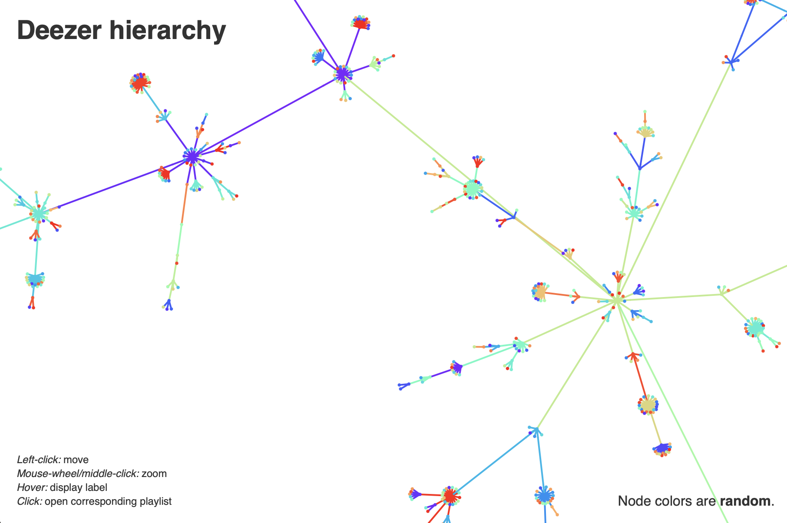

Please find here the experiment results from our paper with interactive plots. We provide additional results that could not fit within the six-page limit for interested readers.
Visualisation of the learned concept activations vectors (Section 3):
Visualisation of the learned graph hierarchies (Section 4):
Visualisation of the experiment structures baselines (Section 5.3.1 and Table 2):
Visualisation of the experiment hierarchies baselines (Section 5.3.3 and Table 1):
Troubleshooting:
All visualisations use the force-graph.js rendering script. Make sure Javascript is enabled on your browser.
If everything works properly on your browser, you should be able to see something like this:
